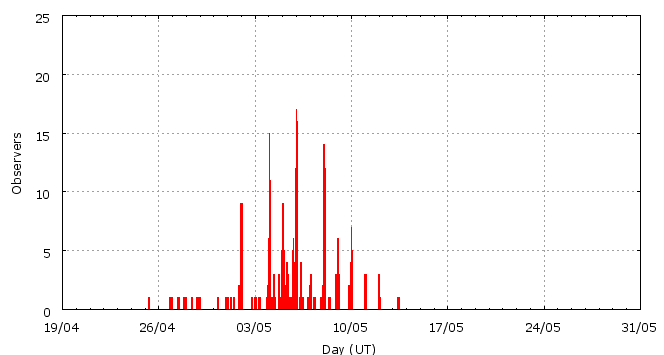

This page shows automated results of the Eta-Aquariids 2008, based on visual data entered through the IMO electronic report form. Send your feedback regarding this page to Geert Barentsen. Note that these automated results may not be suitable for scientific use!
Page generated: 2008 July 23 at 16:40 UT.
ZHRmax = 65 based on 643 Eta-Aquariids in 110 data intervals, assuming fixed population index r = 2.4 and zenith correction 1/sin(hR).

| Time (UT) | Solarlon | nINT | nETA | ZHR | |
|---|---|---|---|---|---|
| 2008-04-27 11:25 | 37.455 | 1 | 1 | 23 | +-16 |
| 2008-04-28 11:20 | 38.424 | 1 | 0 | 15 | +-15 |
| 2008-05-01 11:20 | 41.338 | 1 | 2 | 11 | +-6 |
| 2008-05-02 18:53 | 42.614 | 2 | 27 | 47 | +-9 |
| 2008-05-04 08:37 | 44.138 | 5 | 20 | 35 | +-8 |
| 2008-05-04 18:20 | 44.531 | 6 | 42 | 40 | +-6 |
| 2008-05-05 04:24 | 44.937 | 8 | 26 | 25 | +-5 |
| 2008-05-05 13:09 | 45.290 | 3 | 28 | 30 | +-6 |
| 2008-05-05 18:38 | 45.512 | 9 | 174 | 34 | +-3 |
| 2008-05-06 00:15 | 45.738 | 9 | 20 | 46 | +-10 |
| 2008-05-06 01:11 | 45.776 | 25 | 124 | 65 | +-6 |
| 2008-05-06 08:40 | 46.078 | 14 | 111 | 40 | +-4 |
| 2008-05-06 21:14 | 46.585 | 5 | 9 | 30 | +-9 |
| 2008-05-08 01:12 | 47.713 | 7 | 22 | 34 | +-7 |
| 2008-05-08 04:19 | 47.839 | 7 | 20 | 13 | +-3 |
| 2008-05-09 01:45 | 48.703 | 3 | 6 | 18 | +-7 |
| 2008-05-10 01:36 | 49.663 | 1 | 3 | 31 | +-16 |
| 2008-05-12 01:28 | 51.590 | 1 | 0 | 6 | +-6 |
| 2008-05-13 09:57 | 52.896 | 1 | 6 | 26 | +-10 |
| 2008-05-13 10:58 | 52.937 | 1 | 2 | 7 | +-4 |
For each estimation interval: time is the middle of the interval, nINT is the number of observing periods and nETA is the number of Eta-Aquariids involved. ZHR = (1 + sum nETA) / sum(Teff/C) where Teff is the effective observing time and C is the total correction for limiting magnitude, clouds and zenith correction. The solar longitudes refer to equinox J2000.0.
Data has been received from 58 observers in 15 countries. Thank you for your efforts!

| Observer | Country | Teff | nETA |
|---|---|---|---|
| Salvador Aguirre | Mexico | 9.40h | 40 |
| Plamena Alexandrova | Bulgaria | 5.20h | 11 |
| Rainer Arlt | Germany | 0.70h | 1 |
| Pierre Bader | Germany | 8.20h | 20 |
| Geoff Carstairs | Australia | 2.84h | 29 |
| Paul Craft | Australia | 1.84h | 33 |
| Paul Craft | Australia | 1.44h | 27 |
| Orley Cruz | Cuba | 1.81h | 3 |
| Mark Davis | United States | 3.23h | 8 |
| Todor Dimitrov | Bulgaria | 2.48h | 5 |
| Irena Divisova | Czech Republic | 7.00h | 3 |
| Gadi Eidelheit | Israel | 1.41h | 18 |
| Shlomi Eini | Israel | 0.67h | 4 |
| Plamena Enikova | Bulgaria | 2.07h | 2 |
| Stela Frencheva | Bulgaria | 0.32h | 0 |
| Christoph Gerber | Germany | 6.22h | 7 |
| William Godley | United States | 2.52h | 6 |
| Sylvie Gorkova | Czech Republic | 5.00h | 1 |
| Hodaya Guedg | Israel | 1.33h | 24 |
| Shy Halatzi | Israel | 2.18h | 38 |
| Wayne T. Hally | United States | 7.65h | 5 |
| Jan Hattenbach | Germany | 3.75h | 105 |
| Roberto Haver | Italy | 0.88h | 9 |
| Vilem Heblik | Czech Republic | 6.90h | 11 |
| Carl Hergenrother | United States | 0.61h | 4 |
| Netanel Hershkovitz | Israel | 0.83h | 6 |
| Carl Johannink | Netherlands | 5.05h | 3 |
| Jakub Koukal | Czech Republic | 54.78h | 26 |
| Adrian Lelyen | Cuba | 1.87h | 3 |
| Peter Van Leuteren | Netherlands | 10.18h | 12 |
| Anna S. Levina | Israel | 2.66h | 33 |
| Robert Lunsford | United States | 6.50h | 16 |
| Adam Marsh | Australia | 3.00h | 46 |
| Ivana Marjanovic | Serbia | 1.50h | 6 |
| Jan Marcis | Czech Republic | 2.00h | 52 |
| Jacqueline Marsh | Australia | 2.00h | 37 |
| Milos Maric | Serbia | 1.59h | 8 |
| Koen Miskotte | Netherlands | 15.23h | 5 |
| Momchil Molnar | Bulgaria | 2.75h | 7 |
| Avi Osher | Israel | 1.67h | 17 |
| Dusan Pavlovic | Serbia | 1.34h | 6 |
| Branislav Pelech | Slovakia | 1.06h | 4 |
| Dominik Rajsky | Slovakia | 0.53h | 1 |
| Dominik Rajsky | Slovakia | 0.53h | 1 |
| Jurgen Rendtel | Germany | 10.85h | 5 |
| Branislav Savic | Serbia | 1.80h | 7 |
| Monika Skvarilova | Slovakia | 0.53h | 0 |
| Monika Skvarilova | Slovakia | 0.53h | 0 |
| Phil Snelling | Australia | 2.00h | 31 |
| Tadeusz Sobczak | Poland | 1.01h | 10 |
| Katarina Stankovic | Serbia | 1.50h | 5 |
| Matej Sustr | Slovakia | 1.90h | 4 |
| Michal Sustr | Slovakia | 1.90h | 0 |
| David Swann | United States | 1.95h | 7 |
| Daniela Urumova | Bulgaria | 6.30h | 10 |
| Michel Vandeputte | Belgium | 11.30h | 8 |
| Valentin Velkov | Bulgaria | 4.80h | 10 |
| Nemanja Vojvodic | Serbia | 1.50h | 4 |
Create your own analysis!
Rate intervals: eta2008_rate.csv (CSV-format).
Magnitude distributions: eta2008_magn.csv (CSV-format).